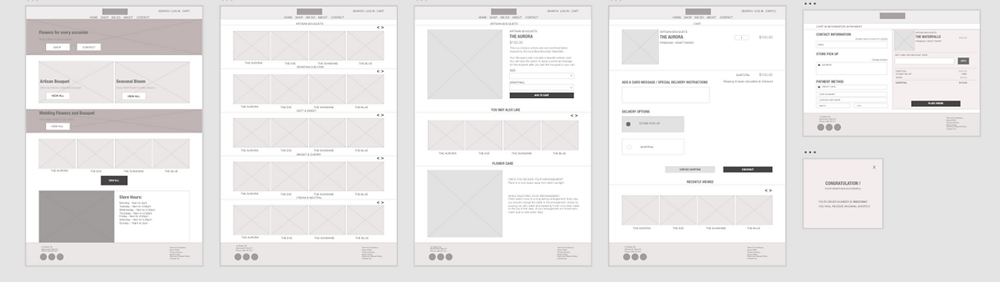
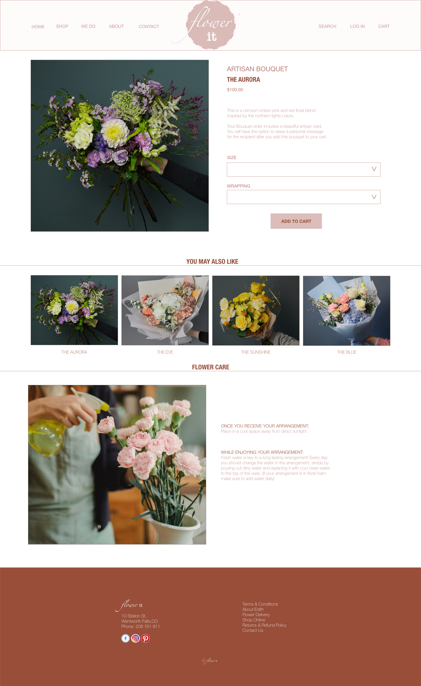

Flower it

Project Context
-
Background
Flower it is a flower ordering website that offers a wide variety of fresh, vibrant flowers for every occasion . This website makes it easy and convenient to order beautiful flowers online with fastest delivery process. The goal is to make a hassle-free and enjoyable experience for anyone looking to order beautiful flowers online.
-
Available online shopping websites have cluttered designs, the product page provides unclear images and details of the flowers, and confusing checkout processes.
-
Goal
Design a modern flower ordering website to be user friendly by providing a simple and intuitive interface that makes it easy to browse and select favorite flowers, customize the order, and schedule delivery.
- See Prototype
Role
Conducting interviews, paper and digital wireframing, low and high-fidelity prototyping, conducting usability studies, accounting for accessibility, and iterating on designs.
Time
6 weeks
Tool
- Adobe XD
- Adobe Photoshop
User Research
-
I conducted user interviews, which I then turned into empathy maps to better understand the target user and their needs. I discovered that the main concern for all the customers is to get the fresh flower with fastest delivery. However, many shopping websites are overwhelming and confusing to navigate, which frustrated many target users as well as their floral arrangement is not organized by color, occasion or theme. Also theirs delivery time is longer and mostly not getting the fresh flowers .This caused a normally enjoyable experience to become challenging for users, defeating the purpose of relaxation.
-
Problem Statement
- Anna is a busy mom with two kids who needs intuitive website navigation with categorized flower layout by theme because she wants online flower ordering to be quick and stress-free.
The local florist shop doesn’t offer seasonal flowers.
Order online is tedious. Most of them don’t have easy and quick delivery for fresh flowers.
I usually want my bouquet based on occasion. But it’s always hard to find the right one. Since they don’t sorted their bouquet for different events.
Voices from User Interviews
Building Empathy
-
Anna is a stay at home mom of two high schoolers. Experimenting new things to decor her house is one of her passions. It is always her thing to celebrate every occasion with her family and friends and decorate her house with fresh flowers. Also, she loves to send some fresh and beautiful flowers to her loved ones in any special day. Mostly she gets frustrated when the florist website does not organize the floral arrangement by theme and it takes long time to deliver.Goals:
- Love to decor home based on seasons and events
- Organizing family and friends gathering for different occasions
- Taking care of her family
I created a user journey map of Anna’s experience using the site to help identify possible pain points and improvement opportunities.
Starting the Design
-
Sitemap
Difficulty with website navigation was a primary pain point for users, so I used that knowledge to create a sitemap. My goal here was to make strategic information architecture decisions that would improve overall website navigation. The structure I chose was designed to make things simple and easy.
-
Digital Wireframes
Moving from paper to digital wireframes made it easy to understand how the redesign could help address user pain points and improve the user experience. Prioritizing useful button locations and visual element placement on the home page was a key part of my strategy.
- 
These were the main findings uncovered by the usability study:
1
Once at the checkout screen, users didn’t have a way to edit or remove the quantity of items in the cart2
Users weren’t able to easily find the delivery option with store location.Final Design
-
Key Mockups
Based on the insights from the usability study, I made changes to improve the site’s checkout flow. One of the changes I made was adding the option to edit the quantity or remove items in a user’s cart using a simple “+” or “-” or remove option. This allowed users more freedom to edit their cart without going through a complicated process to add or remove items.
-

-
To make the delivery options even easier for users, I added a find location box that allowed users to select nearest store address.
-
Considering the usability studies I edited all my mockups and added new features or buttons to make the user flow clear and simple. Here i displayed some of my mockups based on my earlier wireframes and usability studies . I felt it is important to understand the user pain points and I tried to give my users have the smoothest experience possible.
-

- 
-
High-fidelity Prototype
My hi-fi prototype followed the same user flow as the lo-fi prototype, and included the design changes made after the usability study.
Reflection
-
Impact
Our target users shared that the design was intuitive to navigate through, more engaging with the images, and demonstrated a clear visual hierarchy.
-
What I learned
I learned that even a small design change can have a huge impact on the user experience. The most important takeaway for me is to always focus on the real needs of the user when coming up with design ideas and solutions.